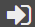

For security purposes, you should log out after you are finished using the Access Control Manager. This prevents
others from accessing the information.
At the top right corner of the application, click the  Log Out button.
Log Out button.
You are logged out of the software. The login page appears.
Note:
If you are logged in as a guest and the capability for guest users to switch accounts is enabled, you will see the

Login button. Clicking this button logs you out of the public environment and displays the Access Control Manager login page.If allowed, your administrator can enable the ability to switch accounts. Administrators, refer to "Enable Guest Access for Pinpoint" in the Flatirons Pinpoint Configuration Guide.